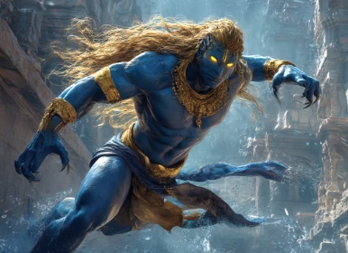
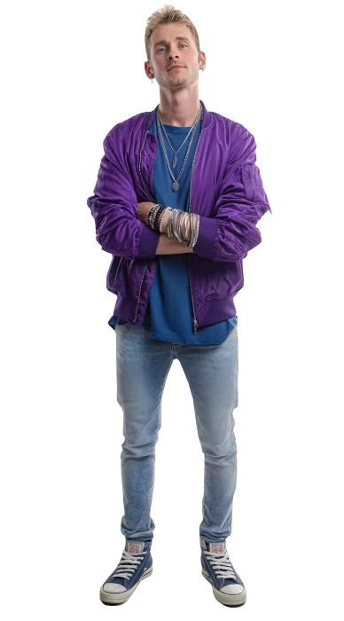
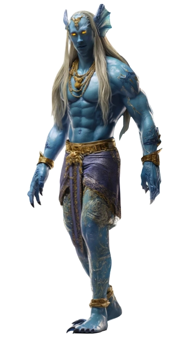
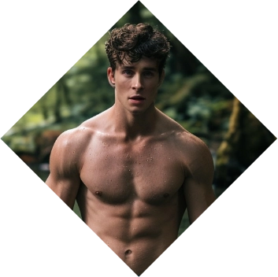

Andy Dulac
Andy Dulac
The Demon Twink
Andy Dulac lived delicately in a world that punished softness. A gay teen from a modest Montreal neighborhood, he was sensitive, artistic, and unapologetically himself—a beacon that drew cruelty like moths to flame. When a group of classmates cornered him one winter night, their hatred took his life. But as his soul slipped away, a rift opened—and Auvraeth, a Fallen Lamasu, descended into the broken vessel.
Once a celestial protector of the innocent, Auvraeth rebelled when Heaven’s silence became unbearable. They stood vigil over those Heaven abandoned, offering comfort to mortals drowning in sorrow. Now reborn in Andy’s body, Auvraeth wears tragedy like armor, offering shelter to the abused and hunted in Montreal’s shadows. They are mercy incarnate to the weak—and an unrelenting storm to the wicked who made Andy scream.❧
Plot Hooks.
Support. Auvraeth walks the alleys and undercurrents of Montreal like a ghost with purpose. They gather runaways, shelter the abused, and quietly declare war on abusers hiding behind mortal or supernatural masks. He offers comfort and pleasure to those who need and show humans that their social rules are just bars in their cage.Signature Motif.
Lights. Auvraeth is always surrounded by soft luminescence—glow from broken neon signs, dying candles, moonlight caught in puddles. His presence feels like warmth in the cold, like silence after sobbing.Perfect for...
Forbidden Desire This character thrives in stories steeped in dark urban fantasy, queer tragedy, and revenge mythos. Plot lines might explore vigilante justice against abusers, rebuilding chosen families, or Auvraeth navigating his dual existence as both protector and wrath.Goal
Vengeance.
Auvraeth remembers every punch, every slur, every plea ignored. The men who ended Andy's life walk free, smug and unrepentant. Vengeance burns like sacred fire in Auvraeth’s heart—not just for Andy, but for every child devoured by hate. Justice will be delivered, one scream at a time.
obstacle
Enemies.
Auvraeth's killers are no longer mere mortals—they’ve been recruited by a extremist religious group that believes Andy’s death was a divine offering. Striking back risks calling attention to his demonic nature. Worse, each act of revenge feeds Auvraeth’s Torment, threatening to twist his mercy into fury and make him the monster they feared.«You did not break me.»
Personal Data
⭮


Andrew Corintin Dulac
Civic Name
25
Age
09/Dec/2000
DOB
Lammasu
House
Blonde
Hair
Blue
Eye color
Faustian
Faction
White
Ethnicity
Canadian
Nationality
Ishhara
Visage
1.75m
Height
72 kg
Weight
French and English
Languages
Male
Gender
Homosexual
Preference
Social Worker
Profession
Bottom
Position
6.5 / 4
length / Girth
Michael Provost
Faceclaim
Scouter
Role
ENTP
MBTI
Character sheet
Attributes
Distinctions
skills
Virtue
Conviction

Nature
Caregiver
Demeanor
Activist



Compassionate
Caring
Empathetic
Selfless
Kind-hearted
Insecure
Overly trusting
Vulnerable
People-pleasing
Self-sacrificing
Caring
Empathetic
Selfless
Kind-hearted
Insecure
Overly trusting
Vulnerable
People-pleasing
Self-sacrificing
Passionate
Proactive
Courageous
Idealistic
Determined
Aggressive
Exhausting
Impatient
Idealistic
Intolerant
Proactive
Courageous
Idealistic
Determined
Aggressive
Exhausting
Impatient
Idealistic
Intolerant
Strength
Dexterity
Stamina
Charisma

Manipulation
Composure
Intelligence

Wits
Resolve
Faith
🙪
Specialties
First Aid
Submission
Whips
Singing
Persuasion
Subterfuge
Medicine
Expression
Insight
Awareness
Technology
Athletism
Performance
Empathy
Meele
Etiquette
Intimidation
Streetwise
Leadership
Other skills

The Fallen
Faith
Manifestation
All demons are unable to grow old or suffer diseases. All damage (except aggravated) is down 1 category and it can be healed by Faith (except aggravated). They are immune to possession, mind control or illusion.
Faithful Visage
Ishhara: Effect dice in Charisma, Awareness, Insight, Leadership or Subterfuge rolls are upped one category.
Advantage
Hitches in Subterfuge, Persuasion, Intimidation and Leadership rolls can be rerolled so long the action is related to subdue and undermine the Heavenly Host's plans or their followers.
Torment
Weaknesses
Most other demons have powers to harm Demons, Evocations and also True Faith can be very powerful against them.
Tormented Visage
When given into the Torment, the character receives a D6 advantage of Venomous Claws and Venomous spit that are added to the main result. Receives extra limbs which allow them to roll their highest dice again and add the result. His image cannot be seen in a mirror or camera.
Weakness
They cannot reroll Hitches in Subterfuge, Persuasion, Intimidation and Leadership rolls against other Demons.
The Lores

Lore of Longing
Control Emotions
Read Emotion Subterfuge rolls against you are automatically failed. You can add a D6 advantage in Empathy or Insight rolls.
Empathetic Response Gain the trust of others. Add a D6 advantage on Empathy rolls and add the result to the main result.
Manipulate senses Manipulate the senses of others. Create a D6 advantage on Awareness and Insight for others OR create a D6 Awareness disadvantage on the objective.
Lore of Storms
Command over Water
Summon waters Summon water from any source. Add a D6 advantage to represent the new water source.
Lore of Transfiguration
Identity Change
Mimic Add a D6 advantage on Performance rolls when imitating someone and add the result to the main result.
Backgrounds


Signature Assets
Angelic Gaze
Auvraeth's gaze is also overlaid Andy's allowing him to communicate with others easily. Add a D6 to any Leadership, Empathy or Intimidation rolls.
Sexy
Recognized for his beauty and body, he is sought by many men and women. Add a D6 to any social roles if required.
Socially Aware
Andy is really keen on how society moves and what makes people tick. He understands the inner cogs of such subtlety which adds a D6 to any Awareness or Insight rolls when dealing with social matters.
Other Assets
Followers
A group of young LGBTQ2S activists from the region that are more than willing to support his cause. Players are encouraged to take up on this role if they wish to interact with Andy.
Pacts
A group of mortals from whom he takes Faith. Players are encouraged to take up on this role if they wish to interact with Andy.
Allies
A group of humans who tend to offer a hand to Andy. Usually they are involved with him romantically or sexually, which is the way he pays them. Players are encouraged to take up on this role if they wish to interact with Andy.